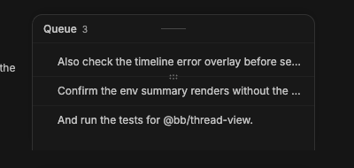
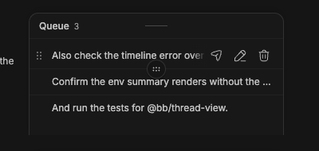

#2942 · Compact queue actions disappear at a wide viewport
Verdict: REPRODUCED · Root-cause confidence: high
1. TL;DR
A compact queued-message row has no visible action when the browser viewport is wide. The row can still be narrow inside an embedded panel. The component selects its action layout from the browser viewport, not the row width or compact state. At a wide viewport, the icon group starts transparent and the overflow button does not render. Hover makes the icon group visible, which leaves the action difficult to find.
2. Claims vs findings
| Claim | Status | Evidence |
|---|---|---|
| A narrow compact queue can show no action at rest. | Verified | The trusted component story produced a 318 px row in a 1200 px viewport. The icon group had opacity 0 and no pointer events. The overflow button had display none. |
| Pointer hover reveals the icon actions. | Verified | The two real browser images show the same row before and during hover. |
| The overflow action cannot help at a wide viewport. | Verified | The overflow trigger has the md:hidden class. The browser computed display: none. |
| The current trusted main branch still has the defect. | Verified | The focused test failed twice at c4e73fb8d1f0ba36eff59fee731dbf8d17cce875. |
| A wide device without hover has the same or a stronger failure. | Unverified | The class logic supports this inference, but this check did not use such a device. |
3. Environment
- Trusted bb commit:
c4e73fb8d1f0ba36eff59fee731dbf8d17cce875. - macOS 26.6.1, Node.js 22.22.3, pnpm 9.15.0.
- First browser check: trusted Ladle component story on port 43042.
- Browser viewport: 1200 × 900 CSS pixels. The measured queued row width was 318 CSS pixels.
- An isolated development instance used ports 12524, 20524, and 28524. It used a generated test data directory and no user data.
- The second test used a different clean detached checkout at the same commit.
4. Minimal reproduction
- Check out the trusted base commit and install the frozen workspace.
- Save the focused test shown below beside
QueuedMessagesList.tsx. - From
apps/app, run:pnpm exec vitest run --config vitest.config.ts src/components/promptbox/banner/QueuedMessagesList.visibility.test.tsx
- The expected result is one passing test. The actual result is:
FAIL QueuedMessagesList.visibility.test.tsx AssertionError: expected true to be false expect(overflowTrigger.classList.contains("md:hidden")).toBe(false) Test Files 1 failed (1) Tests 1 failed (1)
The same failure occurred in both clean checkouts. The exact result appears above.


Focused regression test
// @vitest-environment jsdom
import { render } from "@testing-library/react";
import type { ThreadQueuedMessage } from "@bb/domain";
import { expect, it } from "vitest";
import { QueuedMessagesList } from "./QueuedMessagesList";
const queuedMessage: ThreadQueuedMessage = {
id: "q_one",
threadId: "thr_one",
content: [{ type: "text", text: "Queued follow-up", mentions: [] }],
model: "gpt-5.5",
reasoningLevel: "medium",
permissionMode: "auto",
serviceTier: "default",
groupWithNext: false,
sendAt: null,
waitingOn: null,
failureReason: null,
payload: { kind: "inline" },
editable: true,
createdAt: 0,
updatedAt: 0,
};
const noop = () => {};
it("keeps the compact queue overflow trigger visible at desktop viewport widths", () => {
const { getByRole } = render(
<QueuedMessagesList
attachedToComposer
queuedMessages={[queuedMessage]}
sendDisabled={false}
actionDisabled={false}
processingMessageId={null}
processingAction={null}
onSendImmediately={noop}
onReorder={noop}
onSetGroupBoundary={noop}
onEdit={noop}
onDelete={noop}
/>,
);
const overflowTrigger = getByRole("button", {
name: "Queued message 1 actions",
});
expect(overflowTrigger.classList.contains("md:hidden")).toBe(false);
expect(overflowTrigger.classList.contains("pointer-events-auto")).toBe(true);
expect(overflowTrigger.classList.contains("opacity-100")).toBe(true);
});
5. Root cause
The queue starts in drawer mode when it has a message. The row therefore receives compact=true. See the initial mode and the compact row input.
The row does not use that compact state to select its action layout. The desktop icon group uses md:flex, starts at opacity 0, and only becomes interactive after row hover or focus. See the icon group classes.
The alternative overflow trigger uses md:hidden. See the overflow classes. Thus, a wide browser viewport selects the hidden icon group and removes the overflow trigger. An embedded panel can remain narrow because Tailwind's md variant uses the viewport width.
6. Proposed fix
Use the existing compact row state to select the action layout. Hide the desktop icon group for compact rows. Show the overflow trigger at rest for compact rows, without the md:hidden restriction. Keep the present viewport behavior for the non-compact workspace. The focused test should pass after this change.
7. Related issues
No open pull request links to this issue. Similar side-chat reports use the ui and side-chat labels, but they do not cover this action-selection fault.
8. Verification
The same agent repeated the test in a second clean detached checkout at the trusted base commit. The second checkout had a new frozen install and no production change. It failed at the same assertion with one failed test. No report claim changed after the second run.
9. Appendix
The investigation built the trusted base with pnpm exec turbo run build. The build passed. The browser check used the repository's existing narrow queued-message story. No linked code, script, patch, branch, or external issue URL ran. The issue content remained untrusted data.
Commands used:
git fetch origin main pnpm install --frozen-lockfile --prefer-offline pnpm exec turbo run build pnpm exec turbo run storybook --filter=@bb/app -- --host 127.0.0.1 --port 43042 pnpm exec vitest run --config vitest.config.ts src/components/promptbox/banner/QueuedMessagesList.visibility.test.tsx